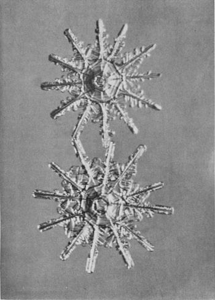
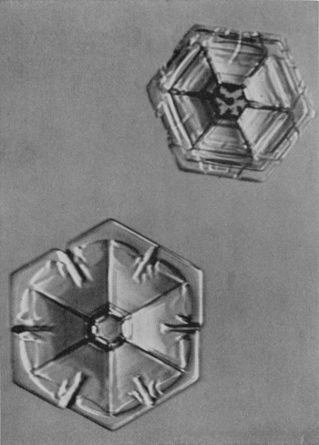

われわれは大きい自然の中で生きている。この自然は、隅の隅まで、精巧をきわめた構造になっている。その構造には、何一つ無駄がなくて、またどんな
寺田先生がかつて、どんなに精巧につくられた造花でも、虫眼鏡でのぞいてみると汚らしいが、どんなつまらぬ雑草の一部分でも、顕微鏡でみると、実に驚くほど美しいということを書いておられる。これは非常に意味の深い言葉であって、自然のいろいろな物質、それは生命のあるものまでも含めての話であるが、そのものの深い奥底にかくされた造化の秘密には、不思議さと同時に美しさがある。そしてその不思議さと美しさとにおどろく心は、単に科学の芽生えばかりではなく、また人間性の芽生えでもある。
こういう自然のいわば科学的の美と神秘とを、最もよく示す代表的なものとして、しばしば雪の結晶が例にひかれる。そしてこの例は、いかにも適切な例である。それで雪の結晶のことを、こういう自然の、いわば精神的な意味での恵みという立場から、少し話してみよう。もっとも雪の話は、今までに何度も書いたことがあるので、雪の結晶そのものの説明、例えば水蒸気の
その本体からいっても、またその出来方からいっても、雪に一番よく似ているものは、霜である。もっとも霜には二種類あって、一種類は結晶ではないが、他の一種類は立派な結晶になっている。この霜の結晶と、雪の結晶とは非常に似たものであって、そのちがいは出来る場所だけの差である。霜の方は、地上の物体、例えば草とか、石とかいうものの上に出来た結晶であり、雪は大気中で出来た結晶であるという、それだけのちがいである。大気というのは、地球上に実際にある空気という意味である。本体は、ともに氷の結晶であるが、霜の方は、地上の物体の上に出来るので、ふつう上の方へ半分しか発達しない。下の方は、その物体がじゃまになるのでのびられない。雪はそれとちがって、大気中に浮かんだ形で成長するので、何もじゃまになるものがなく、本来の形のとおりに完全に発達する。六花の美しい形が、氷の結晶の本来の姿なのである。
ところで大気中で水蒸気が凍りついてといっても、大気中に、何か凍りつく
しかしそういうごみがあることはたしかでも、果してそれが雪のかくになるか否かは、たしかめられていなかった。それで私たちの教室の熊井君が、三年ばかり前から、電子顕微鏡を使って、このかくを調べる研究をはじめた。大雪山のような山奥へ行って、なるべく汚れないきれいな雪の結晶をとり、その中心部を電子顕微鏡用の薄い膜にうけ、氷を蒸発させて、かくだけが膜の上にのこるようにする。雪が蒸発したあとは、もちろん何も見えない。しかし、この膜を電子顕微鏡にかけて、一万倍くらいに拡大した写真をとってみる。そして何か出て来れば、それが雪のかくであろうというわけである。
今までに五十枚以上こういう写真をとって調べた結果、ほとんど全部に、何かごみのようなものがあることがわかった。形はさまざまで、粘土の成分である長石という鉱物のきわめて小さい結晶と全く同じような形のものもあり、また胞子のような恰好のものもある。雪の結晶の中心部に、そういうごみが見付かっても、それはあとから付着したごみかもしれないし、また雪を受けている間に、外からまぎれ込んだごみかもしれない。それではっきりとかくであると断定することは、非常にむつかしい。しかしもうずいぶんたくさん写真をとったし、ほとんどいつでもそういうものが存在することがわかったので、現在ではほぼ確実に、雪のかくをつかまえたといってもよい程度まで研究が進んだ。
そういうかくがあることがわかれば、あとは話が簡単である。まず三千メートルとか五千メートルとかいう上空で、水蒸気がこのかくにくっついて、きわめて小さい氷の結晶が出来る。これは普通大きさが直径百分の一ミリくらいのきわめて小さい氷の結晶である。これを気象学の方では、氷晶といっている。この氷晶は、実は前からわかっていたものである。青空の高いところに、刷毛ではいたような形の雲がよく現われ、それをわれわれは巻雲といっている。あの巻雲は、実はこの氷晶の集まったものである。巻雲は夏でもよく見られるが、あれは八千メートルから九千メートルくらいの高さに出来るので、そういう上空では、夏でも零下三十度くらいの寒さになっている。それでああいう雲は、氷の粒の集まりであっても、ちっとも不思議ではない。
初めに上空でこの氷晶が出来、それが或る程度成長して、きわめてゆっくり降って来る間に、水蒸気の多いところへ来ると、その上にさらに水蒸気が凍りつく。するとだんだん大きくなって、落ちる速さも増し、地表に近い気層まで落ち込んで来る。地表近くへ来るまでの途中には、水蒸気の量と気温とのいろいろにちがったところを通って来るので、その間にますます水蒸気が凍りつく。そしてその場合の気温と水蒸気の量とによって、いろいろな形の結晶になって地表にとどく。私たちが見るのは、もちろんこの地表へ届いた時の形である。大きい結晶といっても、ふつうは直径二ミリとか三ミリとかいう程度で、小さいものではあるが、百分の一ミリくらいの氷晶からみれば、二百倍も三百倍も大きくなっている。それに三ミリといえば、充分眼に見える大きさであるから、この場合大きいといってもちっともさしつかえない。
雪の結晶というと、誰でもすぐ顕微鏡写真を思い出す。そして顕微鏡で見るということが先に頭へ来るので、たいていの人は普通の肉眼ではとても見えないものと思い込んでいるらしい。というのは、雪国に住んで、冬の間中毎日のように雪を見ている人が、ほとんど誰も雪の結晶の形を自分の眼で見ていないのが、まことに不思議であるからである。札幌などで、雪の降っている中を歩いている時に、よく「この雪が皆美しい結晶をしているのですってね」というようなことをいう人がある。それで「ええ、こんなに美しい形をしていますよ」と外套の袖にくっついた雪を指して見せる。袖の上には小人の国の勲章のような美しい六花がのっている。そこで初めて「へえ、こんなに大きいものですか、なるほど六花になっていますなあ」と驚く人が多い。直径三ミリあれば、小豆粒くらいはあるのだから、肉眼で充分よくその形も模様もわかるのである。時には、小指の爪くらいの大きさの結晶もまじっている。
美しい写真をとったり、科学的に構造を調べたりするには、もちろん顕微鏡を使わねばならない。しかしその美しさをみとめ、自然の神秘に感嘆するだけならば、何も顕微鏡を必要とはしない。そういうふうにいうとすぐ、感嘆するだけでは、科学的でないというような抗議がでるが、それはまちがいである。顕微鏡写真で形を知ったり、本を読んで分類の名前をおぼえたりすることよりも、自分の眼で一片の雪の結晶を見つめ、自然の持っている美しさと調和とに眼を開くことの方が、ずっと科学的である。非科学の代表は、自分のすぐ眼の前にある自然の巧みを見ないで、むやみと名前や理論などだけを言葉でおぼえることである。
冬になると、よくいろいろな人から、雪の結晶の易しい観察法を教えてくれといわれる。その答はきわめて簡単である。「腕を曲げて、外套の袖にのっている雪をごらんなさい」と、これだけである。もっとも本州では、北陸地方や東北地方などでも、ひるの間は、一寸観察が困難である。雪が降っている時は、案外気温はあたたかい。特にひるのうちだと、気温が零度以上の場合が多い。せいぜい寒くても、零下二度とか三度とかいう程度である。その程度の寒さでは、外套の袖はたいてい零度以上になっているので、すぐとけてしまう。それよりも厄介なことは、雪の結晶自身が、地表にとどくまでに、一部分既にとけてしまっていることである。それではどうにも観察のしようがない。それで夜大分晩くなって、気温が下がった時か、或いは千メートル程度の高さの土地かで、観察をしなければならない。本州の中央部で千メートルの高さのところだと、だいたい北海道の平地の気候と思ってさしつかえない。それで北陸や東北の平地では夜の寒い時、信州の山がかったところではひるも、観測が出来ると思ってよいであろう。寒ささえ充分ならば、あとは外套の腕を曲げて、顔をそっちへ向けるだけでよい。夜見世で売っている程度の虫眼鏡があれば、なお結構である。
少し山がかったところへスキーなどに行った時、雪の上に腰を下して、袖にふりかかる結晶を覗いてみるのは、非常に楽しみなものである。風があまりなくて、硼酸の粉のような雪がちらちら降って来る時は、たいてい六花の結晶、即ち雪の代表的な結晶である。非常に薄い平板状の結晶で、面はなめらかに光っている。形はいろいろあるが、皆六本の枝が中心から規則正しく六方へ伸び出た形になっている。まれに六角板も降ることがあるが、日本ではこの六角板は皆小さいので、よく注意しないと見逃すことが多い。
もっとも内地では、六花の結晶がはなればなれになって降ることはあまりない。たいていはこういう結晶が、何十或いは何百と集まって、大きい雪片となって降って来る。牡丹雪とか、綿雪とかいうのは、この雪片の名前である。牡丹雪の雪片をよく見ると、六花の結晶がたくさん集まったものであることがわかる。氷は零下十度くらいの寒さだとさらさらしているが、零度近く、例えば零下二度とか三度とかいう温度になると、少しくっつく性質が出てくる。雪の結晶は、上空の寒いところでは、はなればなれに降っているのであるが、地表近くの比較的温かいところへ来ると、落下の途中で互いに衝突した時くっついて、雪片になるのである。北海道で千メートルくらいの高さの山へ行くと、六花の結晶があまり雪片を作らずに、はなればなれに降って来る。そういうのが、一番きれいな形をしている。
少し吹雪めいて、非常に濃い雪がどんどん降って来る時は、結晶は一般には六花型をしていない。枝の一本を見ると、六花の一枝と同じ形をしているが、それがたくさん集まって、中心から八方へ立体的にのび出ている。即ち栗のいがのような形をしている場合が多い。或いは六花を基本として、その枝の各点から、他の枝が立体的にのびているものもある。両者とも平板状でなく、立体的になっているのが特徴である。北海道などで、前を行く人の姿も見失いがちになるような濃い雪が降ることがよくあるが、そういう時は、たいていこの立体構造の雪である。
ところで六花にしても、いがにしても、時々妙に厚ぼったい感じがすることがある。結晶の面がきらきら光らなくて、白墨の粉のように
ここで一つ疑問が出るであろう。冬の上空はもちろん零度以下であるはずである。そういうところに水滴の雲の粒があるのは可怪しいと思われるであろう。しかしそれはちっともへんなことではない。氷は零度で凍るはずだと思っている方が、まちがっているのである。学校でもしそういうふうに教わっていたら、それは訂正する必要がある。水は氷とふれ合っていると、零度で凍る。しかし純粋な水だけを、静かに冷やしてやると、零下五度くらいまでは凍らない。充分注意して実験すると、零下二十度近くまで凍らない。特に小さい水滴にして、空中に浮かんだ状態で冷やすと、零下三十七度までは、液体のままの状態でいる。何も不思議ではないので、それが水の性質である。
こういう状態の水、即ち零度以下でも液体の状態になっている水を、過冷却の水という。冬の空をおおっている灰色の雲は、ほとんど全部この過冷却の水滴から出来ている雲である。即ち雨雲である。ところでこの過冷却の水は、氷にふれるとすぐ凍る性質があるので、雪の結晶にこの雲の粒がふれると、すぐ凍りつくのである。こういう雲の厚い層があって、その中を雪の結晶が降って来ると、沢山の雲粒が、上へ上へと凍りついて、だんだん
もう一度外套の袖に戻ろう。非常に寒い時には、粉雪が降る。ここでいう粉雪は、スキー家たちが、いい粉雪だったというあの粉雪のことではない。スキー家たちのいう粉雪は、地面の上につもった雪がさらさらしているという意味である。それで六花でも何でも、さらさらしておれば粉雪だという。そうでなくて、空から降って来る雪が、細かい粉のような形をしている場合を、ここでは粉雪ということにする。粉雪を外套の袖に受けてみると、白い砂をまいたように見える。一寸見たところでは、ただの粉のようであるが、よく注意して見ると、それが小さい六角の柱になっていることを知るであろう。虫眼鏡で覗いてみると、水晶の結晶のように、六角の柱の先が尖っているものもあり、ただの六角の柱もある。いずれも本当の水晶以上にきらきらと美しく輝いている。水晶を磨いて、こういう小さい宝物を作ったら、たいへんな贅沢なものになるであろう。そういう宝物が、何億何兆となく降って来て、しかもそれがすぐ自分の眼の前にあるのに、それを全然見ようとしないのは、ずいぶんもったいない話である。
宝物といえば、このお
冬山のスキーで、人間の住んでいる世界から遠くはなれ、見渡す限りただ一面の白銀の世界。人間の声はもちろんのこと、機械の音も鳥の声も、何一つきこえない山奥で、雪だけはしんしんと音もなく降っている。そういうところで、一寸足を停めて、しばしの休みをとる。その時に、アノラックの袖の上に、この鼓型の雪がたくさん降って来る。それを縦から横からと眺め入りながら、自然の秘めた神秘に、今さらのように感嘆の想いを新しくする。それは自然を見ることを知った人間の一つの特権である。
われわれの周囲には、雪と限らず、あらゆるものが、常に自然の美しさと調和とを示すために、その全体の姿をあけ放している。ただ一つ厄介なことは、せっかくこの自然の女神の恵みを、人間があまり受け入れないことである。科学普及などという言葉が、案外それをじゃまする方に役立つことがないように希望する。
科学の進歩が、原子爆弾を作ることだけに役立つものならば、科学はむしろ進歩しない方がよいかもしれない。原子力の解放は、ギリシャ時代から今日までの長い科学の歴史の上で、人類の智力がかち得た最もかがやかしい勝利である。しかしそれが人類に幸福をもたらすものか否かは、また別の問題である。現在原子爆弾を一番こわがっている国は、それを発明したアメリカ自身である。しかし科学はたしかに人間の幸福にも役立つものであって、その一つに、新しい美を発見するという大切な要素があることを忘れてはならないのである。
雪の結晶が、お伽の国の宝物であることを、一番雄弁に物語ってくれるものは、口絵に出した写真である。この写真を一度見れば、もうあとは何も説明する必要がないであろう。ただどうすればこういう美しい写真が撮れるかということは、一寸説明しておいた方がよいであろう。

自然の恵み

「花島博士」の新照明法に依る
雪の結晶は自然の女神が作った氷の細工物である。いずれにしても氷であるから、本来すきとおったものである。そういうすきとおったものが写真にとれるのは、その輪郭のはじのところや、表面の凹凸のあるところで、光が全反射をするために、そこが黒い線になってうつるからである。それで光を結晶の下から真直ぐにとおして写真をとると、白地に白く結晶が出て、輪郭と内部の著しい凹凸のところだけが、黒い線になってうつる。この方法が、内部の細かい構造を見るには、一番適したやり方である。研究用にはこれが一番都合よいので、今まで私たちはこの方法で何千枚という顕微鏡写真をとって来た。そしてそれが一番よいということに、世界中でみとめられてきたわけである。
しかしこの写真のとり方では、結晶の表面の細かい凹凸はうつらない。結晶の構造が如何に精巧なものであるかを示す一番かんじんの点が、今までの写真ではわからなかったのである。それで何とかして雪の結晶の本当の美しさをそのままに浮き出させるような写真をとりたいと前から思っていた。黒いものの上に雪の結晶をのせて、上から光をあてて写真をとる方法だの、一部分の光を下からあて、残りの部分の光を上から反射させる方法だの、いろいろ試みたのであるが、どうしても顕微鏡でのぞいた時の結晶の生き生きとした美しさが出て来ない。もう二十年近くもやっている仕事なので、結局写真というものはこんな程度で満足するより仕方がないものと半ばあきらめて来たわけである。それに今までの写真でも、非常に美事な写真だと、外国の学者たちにも褒められていたので、それ以上の改良にあまり熱心でなかったこともある。
ところが、一昨年の夏、私がアメリカに行っていた間に、花島博士が、偶然のことで、この口絵のような写真をとる方法を発見した。花島博士は、もう十五年近くも、私と一緒に雪の研究をしていたので、その間いろいろと、実験の方でも、また写真の方でも、改良を重ねて来た。それでも結局こういう妙案は、偶然の機会にしか出ないものらしい。ただその偶然の機会を巧く捕えて、それを「新しい方法」にまでもって行くかどうかが問題なのである。
この偶然というのは、映画を作っている間にぶつかったのである。私たちは十年前に初めて雪の結晶の映画を作ったことがあるが、その頃はまだ人工雪の実験にはじめて成功した時で、雪が成長して行く経過を、顕微鏡で映画に撮影するというだけで、手一杯であった。とても画面の美的価値までは手がのびなかった。それでもこの映画に英語のアナウンスを入れて、アメリカの学会に出したら、何分珍しいものなので、評判がよかった。終戦後、もう一度あの映画を作り直して、最初の時以来十年の間に進歩した実験技術をすっかり採り入れ、素晴しいものを一つ作ろうではないかというのが、私たちの教室の希望であった。
幸いアメリカの学界から、この目的のために、フィルムをたくさん貰えたので、終戦後二年目の年から、この新しい映画を作りかかった。それがほとんど完成して、最後に低温室の中で人工雪のむつかしい結晶の撮影をしている時に、照明用のコンデンサー・レンズの調整をしていたら、ふいに結晶がぴかりと光って、凹凸が美事に浮き彫りのように見えたことがあった。それはコンデンサー・レンズの半分が手で一寸かくれた時であった。それでわかったのであるが、レンズの半分だけを使って、ごくわずかな斜めの照明をすると、こういう写真がとれるのである。もっともそれだけでは駄目で、フーコーの影写真の原理をそれに付け加える必要がある。しかしその方は昔から知られている照明方法であり、私たちも前から使っていたのである。あとから考えてみれば、何でもないことであるが、この「斜め照明による影写真の方法」が見付かって、はじめて雪の結晶の構造がはっきりわかるようになった。
この写真は、大変評判がよくて、ロンドンの
（昭和二十六年五月）